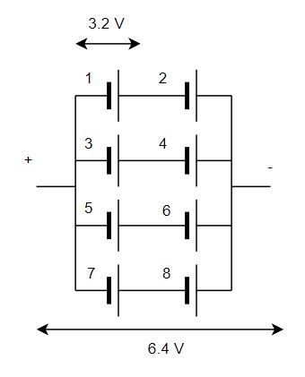

wlw Projekt
Auf dieser Webseite soll mittels dem Raspberry Pi ein Batteriezellenpaket ausgemessen und analysiert werden. Dazu werden mittels zwei Analog zu digital Wandlern die Spannungen ausgemessen und mittels I2C-Schnittestelle an das Raspi weitergegeben. Der Aufbau der Batterie wie auch die Zusammenschaltung ist in dem folgenden Kapitel aufgeführt. Weiterführend werden alle Zellspannungen mit den Werten in einem Graphen dargestellt und aufgezeichnet. Und zuletzt wird mittels den erhaltenen Werten eine Abschätzung des SoC (State of Charge) des Batteriepakets dargestellt.
Zelle
In diesem Abschnitt wird die einzelne Zelle genauer betrachtet. [Datenblatt] In der unten aufgeführten Tabelle sind die wichtigsten Eigenschaften der Zellen aufgeführt.
Eckdaten aus dem Datenblatt:
| Ladeendspannunng: | 3.2 V |
| Entladeschlussspannung: | 2-2,5 V |
| Kapazität: | 15000 mAh |
| Max. Ladestrom: | 2C (30 A) |
| Norm. Ladestrom; | 1C (15 A) |
Aufbau
In diesem Abschnitt wird der Aufbau der Batteriezellen genauer betrachtet.
Die im Projekt Verwendete Batteriezelle besteht aus 8 Lithium-Eisenphosphat Rundzellen des Herstellers HeadWay. Diese Zellen wurden wie Anschliessend ersichtlich zu einer Batteriezelle zusammengeschaltet:
Die Daraus Folgende Zelle hat eine Leerlaufspannung von 6.4 Volt und eine Kapazität von 120 Ah. Somit ist die Zelle Ideal für den Langfristigen betrieb von Geräten die eine Nennspannung von 5 Volt haben.
ADC
In diesem Abschnitt wird der Analog-Digital-Wandler genauer betrachtet. Datenblatt
Eckdaten aus dem Datenblatt:
| Schnittstelle: | I2C |
| Eingänge: | 4 |
| Bit-Rate: | 16 Bit |
| Eingangsspannung: | 2.0-5.5 V |
| Stromverbrauch: | 150 uA |
Um alle Zellspannungen auszulesen, werden somit mindestens zwei ADC's benötigt, wobei +,- und die jeweiligen Zwischenspannungen zu messen. Daraus können später alle Zellspannungen berechnet werden.